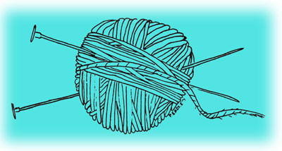
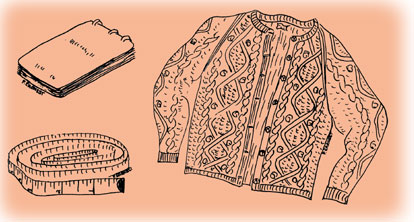

If you're a good knitter and want to make some extra cash, how about turning out sweaters for sale? I've earned almost $200 during a single winter, knitting in my spare time ... not a lot, but enough-when combined with income from a variety of other sources (none related to the old 9-to-5 and all with the idea of adding to as opposed to despoiling this small planet)-to help us build a joyful life here.
We live in Maine, a great tourist area, and I've found that out-of-state visitors provide a healthy market for my creations. Up the road from our home is an old summer resort which is patronized for the most part by elderly, prosperous people from metropolitan areas to the south. With the permission of the owners I placed a simple, concise advertisement on the resort's bulletin board, stating that I custom-knit sweaters and telling how to reach our house.
I had decided the prices in advance, on the basis of the average amount of materials I'd need and the figures from the mail-order catalogs that handle this kind of item. My rates-$30.00 for a woman's sweater and $35.00 for a man's-included yarn, buttons or zipper and the cost of insured mailing to the purchaser. Although most people offered to pay in advance, I preferred to take about $10.00 down and the rest after the customer had received the garment and was happy with it. One or two were slow to settle the bill, but in general the arrangement worked out fine.
The sweaters I was making at the time were the fisherman's type with lots of fancy and cable stitches. They were made of natural wool with the lanolin left in (great for winter-rough hands) and were closed with leather buttons.
I was then buying yarn from Bartlettyarns, Inc., of Harmony, Maine. The company offered a fisherman's wool for $1.15 plus postage per four-ounce skein. My other investments were pattern books (which I already had because I'd been making sweaters for family and friends), needles of assorted sizes, notebook, receipt book, tape measure and plastic bags to prewrap the sweaters before packing them. I also had a "Hand Knit by Patricia Earnest" label made up to give my work a custom look.
I had knitted two sample garments ahead of time-a man's and a woman's-and also a couple of mini-skirts which were more for youngsters than for the age group which actually showed up. My craft aroused quite a bit of interest, and I took orders for 11 sweaters that first year. I stipulated that I'd be doing the work during the winter months because I really don't like knitting in warm weather when hands get sticky and there's so much else to do. Since one of the customers was a woman who was staying at the resort all summer, however, I did rush her garment so that she'd have a chance to wear it there where other guests could see it.
When prospective customers appeared I first showed them the sample I'd already made, swatches of the yarn available able and the patterns from which they could choose. Then, if they selected one of the styles I offered, I took careful measurements: across the upper back from armhole to armhole, the shoulder from neck to arm top, the back length from the base of the neck to the hips (or to whatever point the person wanted), the arm length, the chest/bust measurement and the wrist. I wrote down these figures-plus any remarks such as the style of neckline preferred-and also noted the pattern book and design number, the type and color of yarn, the down payment and the customer's home address. (One disadvantage in taking measurements and then delivering the finished article some time later was that in the intervening months some people had forgotten their summertime thoughts on length. It would be better to measure from a customer's favorite sweater and and give him a copy of the figures to be used.)
The average knitting time for one order was two weeks. The children were then three and seven and took up my attention for a fair amount of the day, and there were the usual farm chores too ... so I'd work mostly in the evenings or during the youngsters' naps. When I got used to the "feel" of different patterns-rather like touch typing-I found that I could read while I wielded the needles. Therefore, although the actual hours of knitting weren't fully covered by the price of the finished articles, I didn't feel cheated because I could amuse myself at the same time I turned out the work.
Before I sewed the knitted sections of a garment together I blocked them carefully, pinned them onto spare sections of plywood and left them overnight to air out well. Then I joined the pieces with a strong backstitch and attached the buttons. Each individual order went into a fresh plastic bag (not my favorite material ... maybe there's something better to use) with a receipt that showed the amount paid on deposit and the amount still owed. I added a good length of matching yarn for future repairs, wrapped the package and mailed it insured.
By the end of that knitting season the eleven sweaters-one child's at $10.00, eight women's at $30.00 and two men's at $35.00-had grossed me $320. My costs had been $123.34, which left me with a net gain of $196.66 ... not enough to get rich on, but it sure helped us through the lean times and I enjoyed the work.
In closing, I'll just pass on one or two pointers I learned in running my home knitting business. First, it's a good idea to maintain careful records and especially to keep track of all costs. My notebook had several pages for debits (expenses such as yarn, buttons and mailing charges entered by date) and others for credits (deposits and final payments). Each person's order had a leaf to itself for measurements, etc. Then, after the sweater was completed, I'd note the date it was mailed and attach a sample of the yarn used.
Speaking of yarn, I bought plenty of wool and buttons ahead of time ... fortunately, because I found once or twice that the shades varied from skein to skein. Since I had a large reserve there was no problem: The unused material was simply returned and accepted for refund.
A couple of hints on marketing: In my experience, word of mouth is by far the best method of advertising, and nothing beats a sample for making sales. A prospective customer is much more likely to be convinced by an item he can see and feel than by any picture or description.
I was glad to find that my product sold itself because, after I'd learned that the local gift/craft stores charge a high commission on handmade goods, I decided against this less personal way of doing business and took a chance on attracting customers right to our home. With no middleman involved, I could control the operation myself and pocket the returns. If our place were less accessible, however, craft outlets would have been a possible alternative.
Finally-whatever sales method you use-set up your market ahead of time, make the necessary contacts and let the business grow from there.
|
 |
 |
|